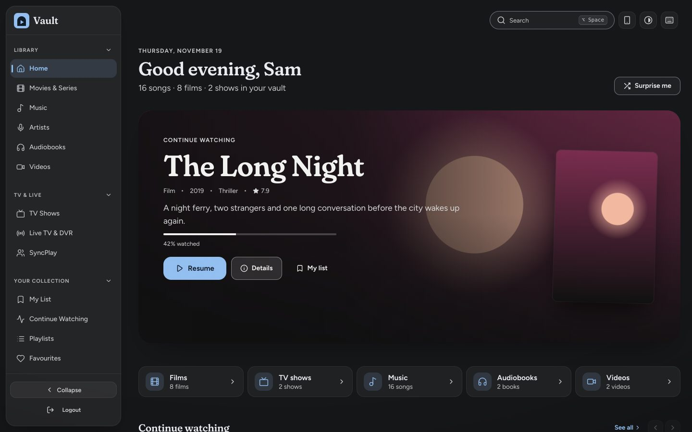
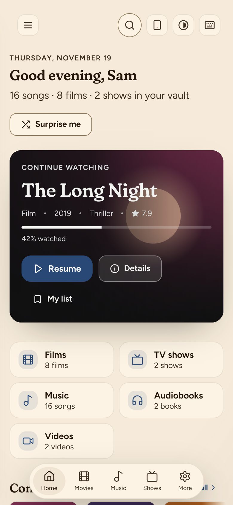
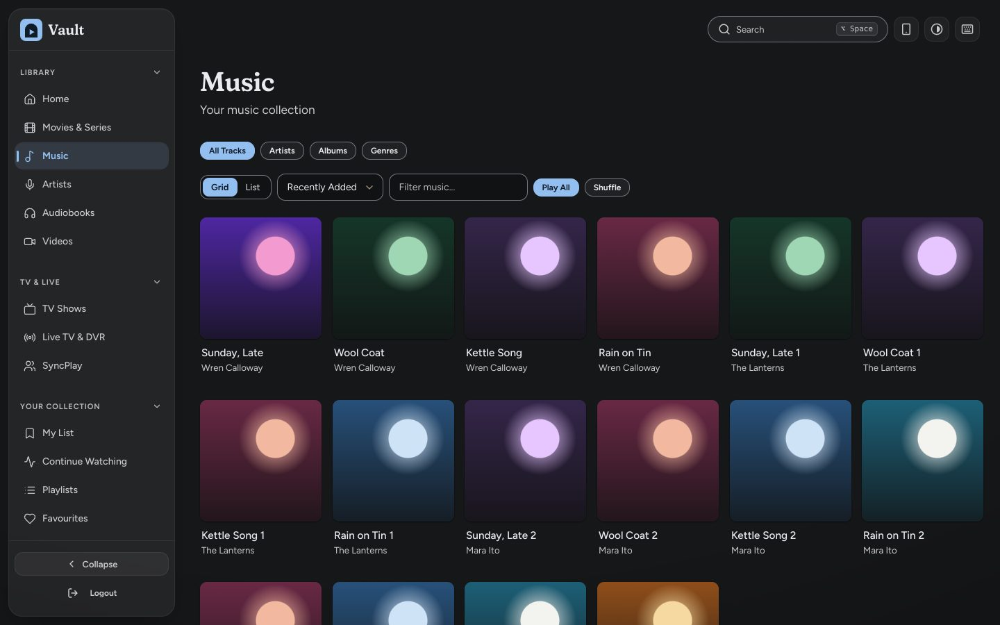
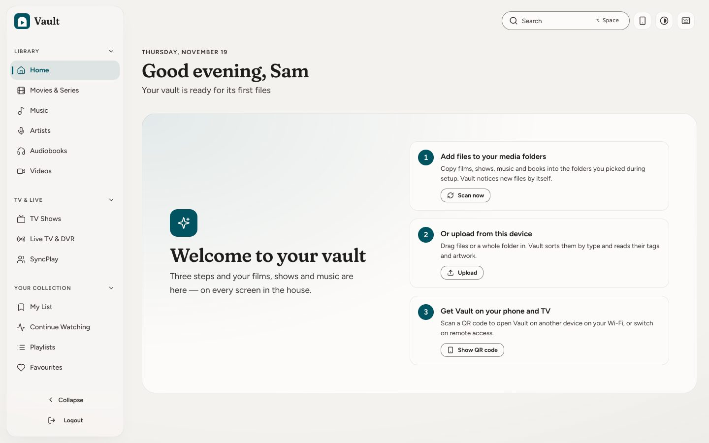

Free · Open source · Self-hosted
Your own Netflix and Spotify, on your own computer.
Vault turns the films, shows, music, audiobooks and podcasts on your drives into a beautiful app for every screen in the house. Your files never leave home.
- No cloud
- No tracking
- No subscriptions
- Linux, macOS, Windows & Docker


Features
Everything you'd pay three subscriptions for.
Point Vault at your folders. It finds new files on its own, reads their tags and artwork, and gives each kind of media the player it deserves.
-
A library that keeps itself tidy
Watches your folders and adds new files automatically. Posters, album art, seasons and episodes, typo-tolerant search — and when a tag is wrong, edit it once and it stays fixed.
-
A proper video player
Timeline previews, subtitles (SRT, VTT, ASS), skip intro, next-episode countdown, Picture-in-Picture and speed control. Formats your browser can't play are converted on the fly.
-
Music that sounds right
Gapless playback, crossfade, a 10-band equaliser with presets, lyrics, a full-screen Now Playing and lock-screen controls on your phone.
-
Books, podcasts and comics too
Audiobooks remember your place, podcasts update from their feeds, and comics open in a reader. Live TV & DVR from your IPTV lists, if you have them.
-
For the whole household
Profiles with their own history and favourites, watch-together rooms with SyncPlay, listening stats, and an installable app for phones, tablets and TVs.
-
Private, and locked tight
Everything streams straight from your computer. Sign-in takes a password plus an 8-of-16 picture grid, with lockouts, rate limits and short-lived tokens.
Screenshots
Made to feel premium, on every screen.
Neutral chrome so your artwork keeps its own colours, one calm accent, and a layout that fits a phone as well as a TV.


Six themes, all easy on the eyes
Dark, light, sepia and true-black for OLED screens — every one tested for WCAG AAA contrast. Try them on this page; Vault opens in the one you pick.
How it works
A small server at home. The app anywhere.
The app holds no data of its own. It talks to the Vault server on your computer, which streams your files straight to the screen you're watching on. Nothing is uploaded anywhere.
-
Run Vault on your computer
One command installs it. Keep it running in the background on a desktop, a laptop that stays on, a NAS or a mini PC.
-
Pick your folders
A setup wizard asks where your films, shows and music live and sets up your sign-in. Vault indexes everything and fetches artwork.
-
Watch on any screen
Open it in a browser on your Wi-Fi, or scan a QR code on your phone. Switch on remote access for a private HTTPS address when you're away.
Install
Up and running in about five minutes.
Copy these into a terminal. When it says Vault is running, open http://localhost:4000 and the setup wizard takes it from there.
$ git clone https://github.com/Kokonut-dev/Vault-V2.git
$ cd Vault-V2
$ npm install
$ npm start
# then open http://localhost:4000$ git clone https://github.com/Kokonut-dev/Vault-V2.git
$ cd Vault-V2
$ docker compose up -d --build
# then open http://localhost:4000Updating later is git pull, npm install and a restart. The full guide covers keeping Vault running after a restart, moving to a new computer and troubleshooting.
Your collection deserves better than a folder.
Free and open source under the MIT licence.